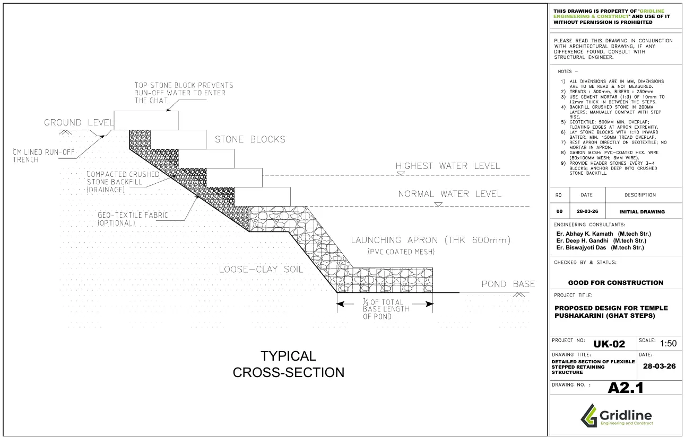
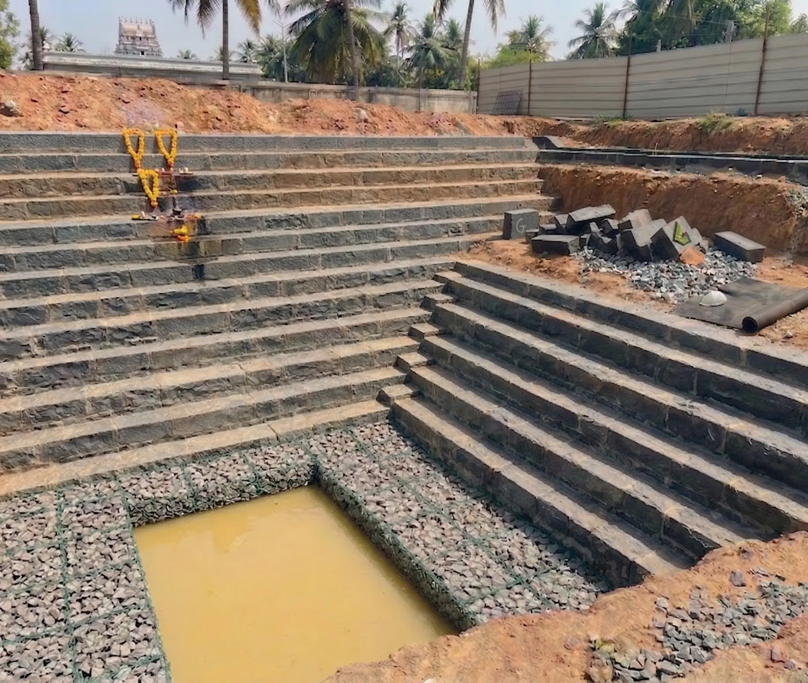

Temple Pushakarini — Ghat Steps:
Engineered Retaining Structure
in Udupi, Karnataka

01 / The Client's BriefWhat the client needed
A temple trust in Udupi, Karnataka commissioned Gridline to design the ghat steps for a pushakarini — a sacred pond integral to the temple complex. Pushakarini ghats are not simply decorative stairs to water's edge; they are actively used structures that must withstand repeated wetting and drying cycles, varying water levels across seasons, and the continuous foot traffic of devotees using the steps for ritual bathing and ceremonial purposes.
The client required a stepped retaining structure that would be structurally sound against the lateral soil pressure on the landward face, stable against the hydrostatic pressure variations as the pond level fluctuates, and sympathetic to the traditional architectural character of the temple complex — meaning stone block construction rather than exposed concrete.
"The ghat steps must be as permanent as the temple itself — engineered to endure, not just built to look right on the day of inauguration."
The deliverable was a complete structural design with working drawings at 1:50 scale — sufficient for direct site execution by a local masonry contractor without engineering supervision on every course.
02 / The Design ChallengeWhere the difficulty lived
The primary engineering challenge was the soil conditions: the site presented loose clay underlaying the pond embankment — a problematic foundation material with low bearing capacity, high compressibility, and susceptibility to softening when saturated. A conventional rigid gravity retaining wall would be vulnerable to differential settlement and potential rotation under these conditions.
The second challenge was water: a pushakarini's water level varies substantially between the dry and monsoon seasons. The structural system had to resist both the full hydrostatic pressure when the pond is at maximum level and the destabilising effect of rapid drawdown — where water drains faster than saturated soil can equilibrate, creating net outward pressure on the embankment face.
The third challenge was durability: stone masonry in a permanently wet and seasonally flooded environment is susceptible to joint erosion, biological growth, and undermining of the toe if water scours the base of the structure during heavy monsoon outflow. The launching apron at the base of the stepped face had to address this scour risk explicitly.
03 / Our SolutionHow Gridline delivered
The design adopted a flexible stepped retaining system rather than a rigid gravity structure — a deliberate response to the loose clay foundation conditions. Flexible systems accommodate minor differential settlement without cracking, which makes them significantly more appropriate for soft-soil sites than rigid concrete alternatives.
The stepped facing is constructed in stone blocks laid in a standard bond pattern with cement mortar jointing, providing the traditional aesthetic required by the temple trust while delivering the mass needed for stability. Tread dimensions of 300mm with 230mm risers were adopted — a proportion that accommodates both comfortable ritual use and structural depth at each step.
Behind the stone facing, a drainage layer of compacted crushed stone backfill was specified, separated from the native clay by a geotextile filter fabric. The geotextile prevents fine soil particles from migrating into the drainage layer while allowing free passage of water — eliminating the build-up of hydrostatic pressure behind the wall face that would otherwise govern the structural design. At the toe, a PVC-coated gabion mesh launching apron was designed to dissipate the energy of water flowing over the lowest step, preventing scour undermining the foundation. All drawings were issued at 1:50 scale with dimensions and material specifications sufficient for contractor execution.

From analysis to delivered drawings




Need a retaining or water-edge structure designed?
From temple ghats to industrial retaining walls — Gridline handles complex soil-structure interaction with rigorous geotechnical reasoning and clean, contractor-ready working drawings.